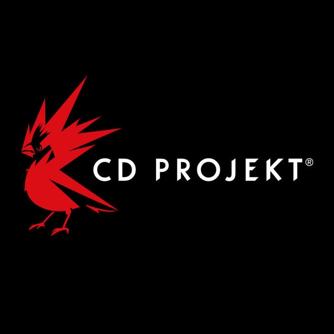

Cyberpunk 2077 
This game, developed by CD Projekt RED, is a dynamic blend of RPG, open-world exploration, and first-person shooter elements. Released on October 12, 2020, the game immerses players in the futuristic dystopia of Night City, offering a gripping narrative, extensive character customization, and intense gunplay. With a Metacritic score of 86, Cyberpunk 2077 promises an engaging experience within its visually stunning and highly interactive world.
| SCORE | CRITIC | REVIEW | PLATFORM |
|---|---|---|---|
| 100 | GameSpew | Cyberpunk 2077 isn't perfect, but it is ambitious. It marries a gripping story with a huge open world absolutely dripping with atmosphere; one in which, after fifty hours of gameplay, I still feel like I've only scratched its surface. | PC |
| 93 | MondoXbox | Cyberpunk 2077's ultimate console version reaffirms the splendid storytelling, exceptional city-building and varied gameplay of the original game, while also being more polished, enriched and finally featuring performance and visuals worthy of new consoles. | XBOX SERIES-X |
| 100 | GamesRadar+ | What Cyberpunk 2077 lacks in campaign length, it makes up for with breadth and soul, offering a world of intrigue and violence unlike any other. | PC |
| 87 | RPG Fan | Despite its mismanaged launch, Cyberpunk is a success story. What began in December 2020 as an incomplete, often-unplayable sore spot for CD Projekt has become one of the most immersive RPGs I’ve ever played – one whose visuals, soundtrack, and narrative can go toe to toe with the strongest in the genre. | PLAYSTATION5 |
| 86 | Digital Chumps | Off the top of my head I can’t think of another game with a backstory like Cyberpunk 2077. It’s fortunate that CDPR were able to spend the last year-plus continuing development of the game, listening to feedback, adding content, and fixing tons and tons of issues. | PLAYSTATION5 |
| 90 | TheXboxHub | Cyberpunk 2077 on XBOX SERIES-X|S takes a very good but very familiar shooter RPG system and gameplay, and layers this incredibly designed world over it. | XBOX SERIES-X |
| 100 | M3 | Cyberpunk 2077 is an engaging experience unlike anything else. The open world mechanics are top-notch and there is almost always something to do on the map. Furthermore, we have a large number of different game paths to choose from, all of which give you a very own experience of the story. | PC |
| 100 | Meristation | t had to be a monumental task to build this "city of dreams" and also populate it with passionate stories and characters, fantastic music and a captivating personality. Shortcuts to greatness are extremely rare, and the steadfast and safest path remains hard work, passion, and the desire to create something that surpasses others, with the right resources to do so. | PC |
| 85 | Press Start Australia | Cyberpunk 2077’s long-awaited next-gen console update is here, and the extended wait looks to have been worth it. The Performance Mode corrects all the poor frame-rate issues in one fell swoop, not to mention the several thousand bug fixes that 14-months and change can bring. | XBOX SERIES-X |
| 85 | Jeuxvideo.com | Thanks to its upgrade, Cyberpunk 2077 finally offers a gaming experience on PS5 and Xbox Series at the height of what it should have been at its launch in December 2020. More beautiful, more stable and better optimized than in backward compatibility : those who had waited for the next-gen patch will finally be able to enjoy the adventure in good conditions. | XBOX SERIES-X |